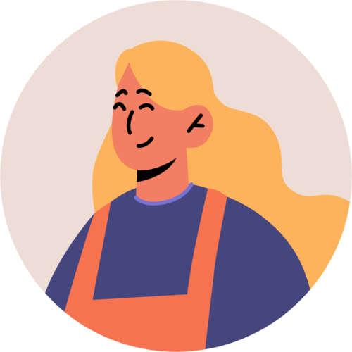

Anastasiya Kita
Business Analyst
Experience
Business Analyst, EPAM Systems Netherlands, Jan 2022 - Apr 2023
Working on a Connectivity Technology Consulting project.
Main challenges:
- Project has an extensive roadmap with 1+ year of planning;
- Many external software and hardware dependencies;
- Project is undergoing a major Agile transformation, which is causing a mess in planning and ways of working.
Main activities:
- Together with PO eliciting high-level cross-component requirements;
- Documenting requirements on Wiki/Jira;
- Decomposing requirements to epics, features, stories and tasks;
- Setting tasks for Design team, participating in ideation and reviewing result;
- Responsible for capturing priorities and following release cadence for features;
- Conducting handover of features to the team once requirements and solutions are complete.
Business Analyst, EPAM Systems Belarus, Dec 2020 - Jan 2022
Worked on new Flutter solution to replace application available on 7 platforms to a single code base.
Main challenges:
- Fixed and tight timelines to replace solution, that was developed for 7+ years;
- Distributed team, fully remote;
- Legacy requirements, a lot of not documented requirements;
- Misaligned behaviour across platforms;
- New features need to be developed in parallel.
Main activities:
- Gathering requirements based on documents analysis, analyzing existing application interface, eliciting requirements from existing application codebase (Android, iOS, WEB);
- Aligning requirements across platforms;
- Reverse engineering and and technical analysis in collaboration with development team;
- Participating in establishing business analys approach;
- Participating planning stakeholder engagement, performing stakeholder analysis;
- Participating in clarification and elicitation sessions with customers;
- Documenting scope and requirements in wiki and epics;
- Participating in groomings, supporting the team with questions, and providing required details;
- Participating in Product Acceptance sessions, writing acceptance criteria;
- Analyzing and tracking requirements changes.
Software Engineer, EPAM Systems Belarus, Feb 2018 - Dec 2020
2020 - Leading the software development group for implementing Accessibility feature for application:
- Worked closely with BA to create and describe the requirements, provided guidance and suggested solutions depending on the Accessibility guidelines;
- Estimated, planned, distributed scope across the team, monitored and controlled the progress;
- Participated in feature development, co-operated with BA to adjust the requirements depending on system limitations and possibilities;
- Managed the team of 7+ DEVs (Android, iOS) and 2+ QAs, arranged and hosted daily status checks, groomings, plannings. Delegated management tasks to other team members, so that everybody could develop their leadership skills.
2019 - 2020 - Leading the software development group for implementing Adaptive UI feature for application:
- Worked with BA and DES to create and describe the backlog;
- Estimated, planned, distributed scope across the team, monitored and controlled the progress;
- Participated in feature development, co-operated with BA to adjust the requirements depending on system limitations and possibilities;
- Managed the team of 5+ DEVs (Android, iOS) and 2+ QAs, arranged and hosted daily status checks, groomings, plannings.
2018 - 2019 - General software development:
- Performed different POCs and then developed Innovation features, such as Google Calendar reminder integration, listen mode for ExoPlayer, Android slices. Had experience with Instagram story sharing;
- Worked on features;
- Fixed bugs.